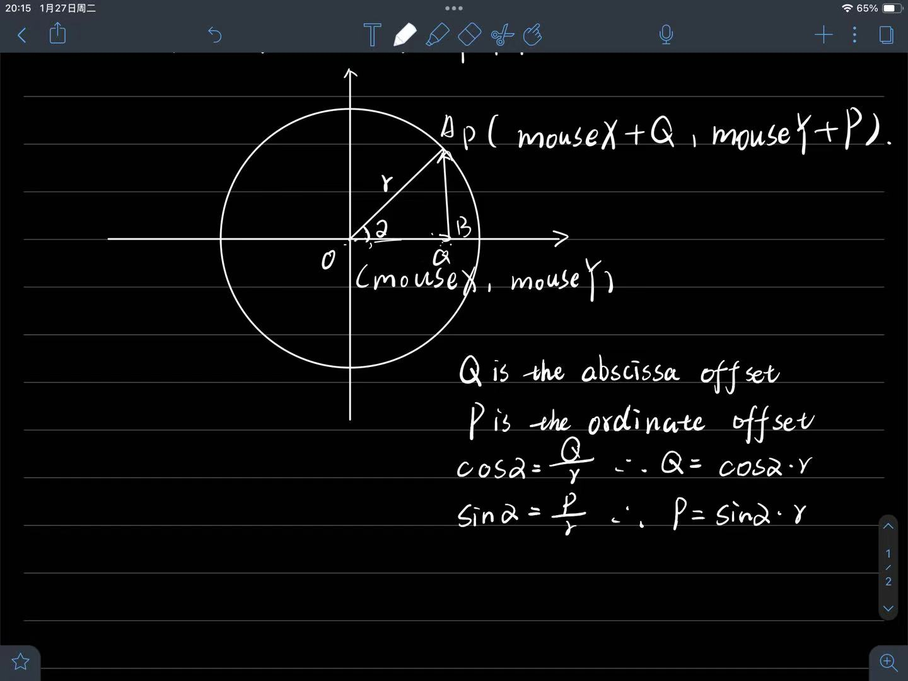

<!doctype html>
<html lang="en">
    <head>
        <meta charset="UTF-8" />
        <meta name="viewport" content="width=device-width, initial-scale=1.0" />
        <title>painter</title>
        <link rel="stylesheet" href="css/style.css" />
        <script src="https://cdn.jsdelivr.net/npm/p5@2.1.2/lib/p5.min.js"></script>
        <script src="https://cdn.jsdelivr.net/npm/p5.sound@0.2.0/dist/p5.sound.min.js"></script>
    </head>
    <body>
        <script src="sketch.js"></script>
    </body>
    <div style="text-align: center; margin-top: 20px">
        <h3>How it works (My Math Logic):</h3>
        <p>I used Sin and Cos to calculate the circular offset.</p>

        
    </div>
</html>
